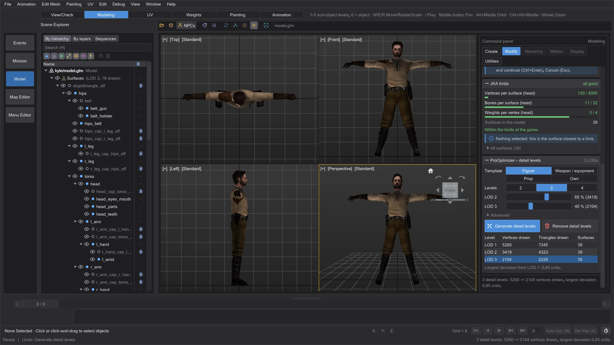
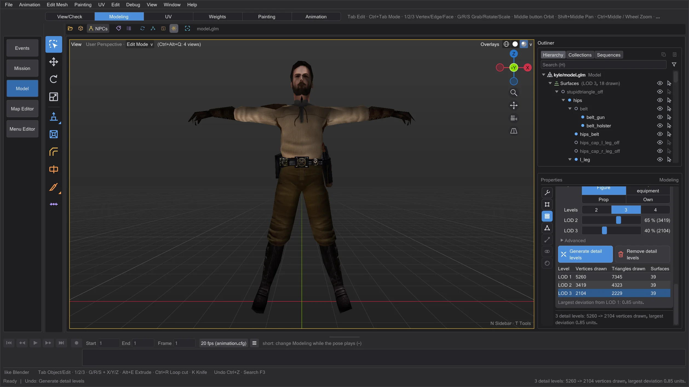
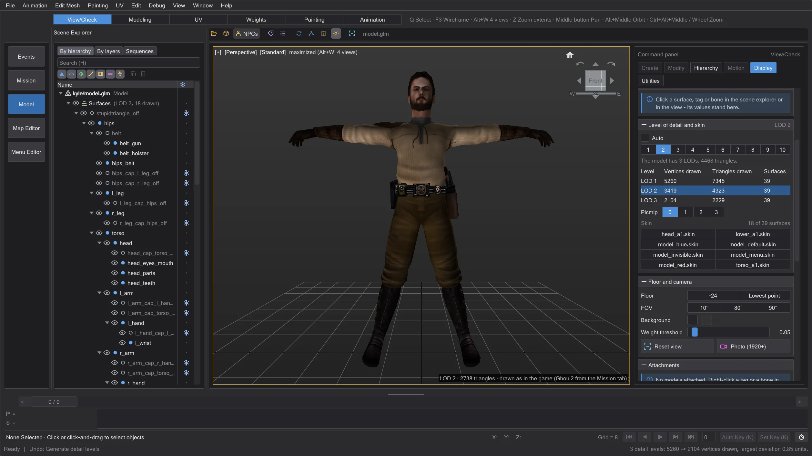
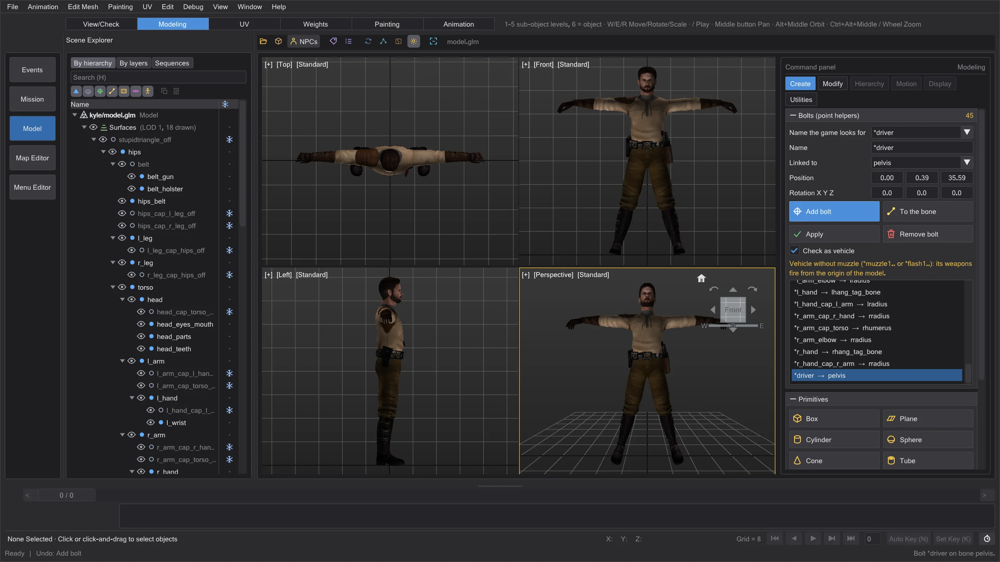
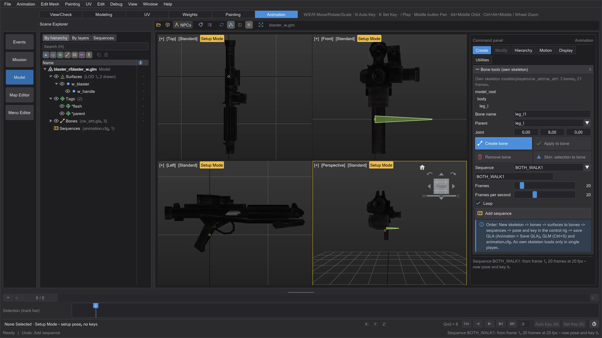

Model tab: detail levels, bolts, own skeleton
Generate LOD 2 and 3 like ProOptimizer or Decimate, see vertices per level, add bolts for seats and muzzles, build a skeleton for a vehicle.
Generate detail levels#
The game draws a far model with a coarser detail level. In the area Modeling the group ProOptimizer - detail levels (3ds Max mode, tab Modify) or Decimate - detail levels (Blender mode, tab Modifiers) makes them from LOD 1. Template chooses how much each level keeps - measured on the files of Jedi Academy: figures 0.65 / 0.40, weapons and equipment 0.55 / 0.30, props 0.75 / 0.50. Levels is 2, 3 or 4 (a .md3 has at most 3), the sliders set the share per level with the target in vertices. Generate detail levels is one undo step; afterwards the view shows the lowest level and the table lists every level before and after - click a row to see it.

Every vertex of a coarser level is a vertex of LOD 1: position, normal, UV, bones and weights stay exactly as in the file, so a .md3 keeps all its frames and a .glm at most four weights per vertex with sum 1. Surfaces are reduced together: where two surfaces meet, an edge collapses in both, the border stays closed. UV seams stay. Tags (*name), surfaces ending in _off and surfaces with _cap_ stay as they are in every level, so caps still close the cut. Each surface stays below SHADER_MAX_VERTEXES of the target game, the lowest level of a .glm below half of it (the stencil shadow of a large surface uses that level). A .glm carries the levels in the file; saving a .md3 writes name_1.md3 and name_2.md3 next to it - if such files are already there, the program asks before it overwrites them. Without Generate nothing changes, saving writes the same bytes as before and leaves name_1/name_2 alone.

Vertices per level#
In the area View/Check the group Level of detail and skin lists every level with vertices, triangles and surfaces; the tooltip of a row names the largest surface and every limit it passes (red: over SHADER_MAX_VERTEXES, yellow: shadow limit of the lowest level, MD3_MAX_VERTS 4096, MD3_MAX_SURFACES 64). For a .md3 of the game the files name_1.md3 and name_2.md3 next to it are counted too. Without levels the button Generate detail levels opens the group above. With the Clone Wars profile the optimizer of the map editor also reports run-time .md3 models with more vertices than one surface carries and no _1.md3, and a _2.md3 without _1.md3 (the game stops there).

Bolts for seats and muzzles#
The group Bolts (point helpers) (3ds Max mode) or Bolts (empties on bones) (Blender mode) in the area Modeling adds bolt surfaces to a .glm: the name from the list of names the game code asks for (vehicles *driver, *droidunit, *muzzle1.., *exhaust1..; emplaced guns *seat, *flash01; weapons *flash; the tags of figures - the tooltip names file and line in OpenJK or Movie Duels) or your own, the bone it follows, position and rotation. Add bolt is one undo step; a click on a bolt in the list fills the fields, Apply applies them. The bolt is saved as a surface with one triangle the game reads as exactly this position and rotation.

With Check as vehicle - or always with the check profile Clone Wars chain - the group warns when *driver is missing (the driver sits at the origin of the model) or every muzzle (*muzzle1.. or *flash1..: the weapons fire from the origin).
An own skeleton for vehicles#
Walkers like AT-RT or AT-TE and droids need their own skeleton - figures stay on _humanoid.gla, whose bones and animations the game shares. In the area Animation the group Bone tools (own skeleton) (3ds Max mode, like Bone Tools) or Armature (own skeleton) (Blender mode, like an armature in edit mode) goes the whole way without another program:
- New skeleton with a folder name creates models/players/<name>/<name> with the bone model_root and puts every surface on it.
- Create bone adds a bone with name, parent and joint; a click on a bone in the list chooses it to move, rename or remove.
- Skin: selection to bone puts the selected surfaces rigidly on the chosen bone - as a part of a vehicle moves. Finer weights are painted in the area Weights as for every figure.
- Add sequence adds frames to the skeleton and a line ANIM_NAME first count loop fps to the animation.cfg; pose and key them with the control rig like any animation, then save .gla, .glm and animation.cfg.
